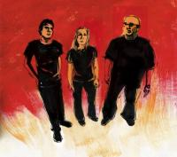
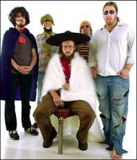
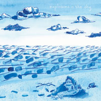

It’s just about that time, cats and kittens for another installment of “What has Ben been listening to?”. I’ve been getting good response from a number of folks about my past installments, and I’ve got a backlog of stuff to dump now. (Update 2005/10/03: see end of post)

First up, I can’t say enough about The Heartless Bastards, a steady and loud trio from up-river in Cinci. Fronted by a diminutive straight-up hottie chick name of Erika Wennerstrom with a just huge voice. As with fellow Fat Possum alums, The Black Keys, their sound is the pounding blue-collar-and-denim romp that comes out of so many great industrial towns (think White Stripes out of Detroit / Black Sabbath from Birmingham UK). You couple that with Wennerstrom’s strong, steady and yet expressive voice and you get something that is truly great. I suggest you find out their debut Stairs and Elevators and give it a spin. (Also, they are playing at Uncle Pleasants on October 14th here in Louisville. Ticketweb will get you in.)
The Matt Pond PA was something I stumbled upon thanks to Pitchfork’s free MP3 singles a few years back. That section of the site I came to find out as a dumping ground for small labels (like Polyvinyl). You can imagine there was a lot of listening for the ultimate rewards, but I did manage to find Mclusky and the Matt Pond PA in there, and considering my appreciation for both bands I’d say it was worth it.
The Matt Pond PA single I picked out was “Fairlee”, the excellent opening track on their 2002 release The Nature of Maps. At the time the MPPA were just a really good multi-piece conglomerate band that rarely toured outside of their home-base of the Northeast. But now, they are opening for Liz Phair on her tour and have readied Several Arrows Later, their 4th or 5th full-length album, for release. Thanks to the wonders of the intarwebs, I have managed to get a listen to this new album.
On Several their songs still remain as yarns about the changing seasons, or perhaps snapshots of wasted fall afternoons, but now with a bit more polish and weight. Something that originally drew me to MPPA was their obvious talent with the modest arrangements to match the subject matter in the songs. A good match, and having been to Vermont, I guess I’m pining for such humility. With Several Arrows Later they’ve made a heavier, more lush album. This jump in production and sound might ordinarily strain other indie bands, but the Matt Pond PA have the talent and patience to take on that load, and do it well.
Self-references: 2003.01.07 – Rainer Maria Rocks, mclusky breaks up, mclusky.
A few weeks back, I joined Brad and Hunter to go and see Clutch in Indianapolis. I was already hyped to see Clutch (though I’m not the biggest of Clutch fans) because of their “awesome live show” reputation. But, as we were driving up, Brad and Hunter told me of the opener (which they had seen at the Louisville Clutch show) — a band called Stinking Lizaveta, fronted by a bearded man-beast named Yanni Papadopoulos.
Milling around before the show, Brad would occassionally point to some dark corner off-stage and say “That’s him! That’s the YANNI.”. Glancing in that direction, I only say a dark mass of hair above what appeared to be a Hawaiian shirt. Some sort of dark yogi not on a hill-top but in the dingy green room of the Vogue. Still, I had not been witness to the Lizaveta.
Finally, the show began and out came someone who appeared to be a young Edgar Allen Poe (actually Alexi, Yanni’s younger brother). His weapon of choice? Upright electric bass. I knew this was going to be good. Behind the drums sat a woman who Brad described as having “huge guns!” – her name is Cheshire Augusta. And then, out from the shadows behind the stage – pot-bellied, unshaven, shirtless, haggard and wearing ripped jeans came… Yanni.
Being an instrumental band, Yanni spoke few words. He didn’t need to. He’d simply walk over to the mic, and say things like “Day of Dust” or “Caught between worlds” or “Man-day. This song is about going to work.” and then proceed to crush our souls with some of the best punk-metal-jazz fusion I’ve ever heard or seen. He enjoyed the crowd and the crowd enjoyed him. He even passes his guitar around the audience at the end of the set. We all converted to Papadopolism that night, my friends. We all agreed we’d easily pay the $20 cover just to see the Lizaveta. Hunter dropped the $10 for their album III, and we listened to it on the way home, but it lacked a certain urgency and certain visceral element that I think raises Stinking Lizaveta to another plane.

Thanks to my buddy Jackson, I managed to get a pre-release version of My Morning Jacket’s soon-to-be-released album Z. It is good.
Let me say that MMJ has all of the hallmarks of a “Southern” (read: Lynyrd Skynyrd) band – the big bearded lead singer, the drawl, the multiple guitarists, the jams. They have all of the hallmarks save for one thing: their actual music. You can’t peg it down easily, especially on Z, their most ambitious outing yet. (“Ambitious” being rock-criticism-speak for “what-the-fuckitious”) They still throw down the jams like they did on their true “breakout” album, 2003′s “It Still Moves“, but they’ve added more depth, more dynamism and more just plain weirdness “a kitten on fire / a baby in a blender” perhaps in reaction to their “Southern” label. Losing two founding members in the last year or so probably had something to do with this “ambitousness”.
Z is a great mix of the old and new – which any “ambitious” album really should have in it’s mix. The songs are varied, with enough rock jams with catchy riffs (“Off the Record”) and enough new, more adventurous fare (“Into the Woods”) to make this a good album and a good step onward for MMJ. In this creative “fanning out” that I heard in the album, I also heard some of their more varied influences cropping up — from Nirvana to Elvis Costello to the Clash to perhaps even a little Pink Floyd. And for those wondering, yes, MMJ is still friends with Mr. Reverb.
It is a time for many happenings in the MMJ world, and so the very different newness of Z seems fitting. For instance, they feature prominently in Cameron Crowe’s newest film Elizabethtown, where they play a local band and yes finally, after years of taunting by that one drunk dude in the audience, they play Skynyrd’s “Free Bird” (which they have never, ever played live). How’s that for irony? Anyway, if you get a chance to give Z a listen, be prepared for something different, something so Southern it’s un-Southern, and enjoy. P.S.: They are sporting on the front cover of Velocity Weekly this week, and Z comes out next Tuesday. Jackson is also hosting a pre-listening party at The Outlook on Bardstown Road tonight from 6-8PM.

I was introduced to Explosions in the Sky after having re-discovered and re-evaluated fellow Austintonians …And You Will Know Us By The Trail of Dead (another post all together) at the urging of Jackson Cooper. Explosions in the Sky is such a great name — how could I not listen?
On the matter of appropriate names for bands, Explosions in the Sky is certainly at the top of the list. For that matter, Stinking Lizaveta and Clutch might be up there, too. At the bottom end of the scale, …Trail of Dead will probably roost. Explosions in the Sky do sound like the fireworks that name might invoke — both the percussive, gasp-worthy delight that a light-show and chest-thumping report would cause, but also for the falling sparks left behind and the inevitably drifting clouds of smoke. The rising crescendo of light and sound with great ends that leave you wanting for more. The dynamic impact of Slint, with a dash of the ominous God Speed! You Black Emperor, and with the silken touch of perhaps the Rachels. Careful, masterful work by a shy group of dudes from Austin, Texas.
How Strange, Innocence, their most recent release, was actually recorded in early 2000! Less that 100 pressings were made and considering their growing foothold on the indie conscience (they contributed heavily to the Friday Night Lights soundtrack — did you know that?), they’ve released this as new material. Do yourself a favor, and check them out at your earliest convenience. I’d also recommend their The Earth Is Not A Cold Dead Place (2003) and Those Who Tell The Truth Shall Die, Those Who Tell The Truth Shall Live Forever (2001)